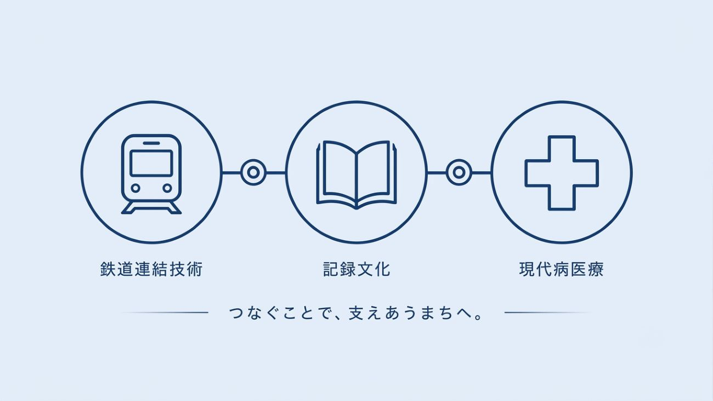

PICONU CITY
目立たない場所こそ、
目立たない場所こそ、
全体を支えている。
ピコぬ市は、鉄道連結技術・記録文化・現代病医療を軸とする自治体です。
目立たない営みを積み重ね、街の記録を未来へつないでいます。

リアルタイム・ピコぬ市 混雑状況(体感値)
職員の体感によるおおよその目安です。正確な待ち時間を保証するものではありません。
暮らしの場面から探す
市の施設
施設一覧を見る >


アクセス記録
人目のご来庁です。記録上意味のある番号についてはこちら。